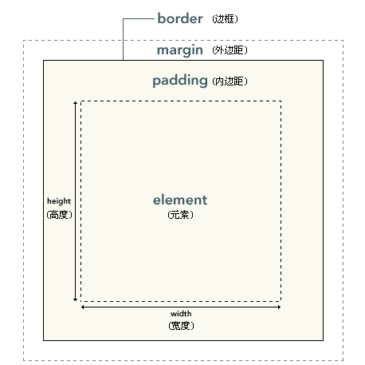

CSS笔记 - Div盒子概念、定位 - 小易
一、盒子简介
1、盒子图形：

2、内边距、边框和外边距都是可选的，默认值是零；
3、margin 和 padding 设置为零来覆盖所有浏览器样式，解决浏览器兼容性；
*{ margin:0;padding:0;}
4、增加内边距、边框和外边距不会影响内容区域的尺寸，但是会增加元素框的总尺寸；
添加了margin、 padding和border后，若想保持原盒子尺寸不变，可在盒子的总尺寸上减去增加的margin、 padding和border的值
5、padding : 内边距，也有称为填充；margin : 外边距，也有称为空白或空白边 ;
二、margin 和 padding
1、margin-top、margin-right、margin-bottom、margin-left分别代表上右下左；padding同样如此
2、书写方式(padding同样如此)
（1）四周 margin:20px; 指四周的margin都是20px
（2）垂直 水平 margin:10px 20px; 指margin的上下为10px，左右为20px
水平居中 margin:10px auto;
（3）上 右 下 左 margin:5px 10px 15px 20px; 指margin的上 右 下 左的距离为5px 10px 15px 20px
（4）上 左右 下 margin:5px auto 15px; 指上 下的距离为5px 15px，左右居中
3、
padding不能为负值；
margin可以为像素、百分比、甚至负值
4、外边距合并
当两个垂直外边距相遇时，它们将形成一个外边距。合并后的外边距的高度等于两个发生合并的外边距的高度中的较大者
三、border边框
1、边框宽度 border-width:1px;
2、边框风格 border-style : none(无轮廓)/hidden(隐藏边框)/dotted(点状轮廓)/dashed(虚线轮廓)/ solid(实线轮廓)/double(双线轮廓)/groove(3D凹槽轮廓)/ridge(3D凸槽轮廓)/ inset(3D凹边轮廓)/ outset(3D凸边轮廓)
3、边框颜色 border-color
4、图片边框 border-image
5、
边框圆角 border-radius:8px;
6、简写 border:1px solid red;
（调试常用）
四、定位简介
1、块级元素: div、h1或p元素 即：显示为一块内容称之为 “块框“
2、行内元素: span,strong,a等元素 即：内容显示在行中称 "行内框"
3、使用display属性改变成框的类型 即：
display:block;让行内元素设置为块级元素 display:none;没有框
4、
通过width、height可以改变其宽高的就是块级元素
五、相对定位(relative)和绝对定位(absolute)
1、position:relative; 如果对一个元素进行相对定位，它将出现在它所在的位置上。通过设置垂直或水平位置，让这个元素“相对于”它的起点进行移动（如：示例C-D）
2、position:absolute; 元素的位置相对于最近的已定位祖先元素，如果元素没有已定位的祖先元素，它的位置相对于最初的包含块（如：示例B、G-H）
3、
一般absolute和relative联合使用
（如：示例E-F）
六、浮动float
1、float : none/left/right 属性定义元素在哪个方向浮动，在CSS中，任何元素都可以浮动；
2、清除所有浮动 clear : none(允许两边都可以有浮动对象)/both(不允许有浮动对象)/left(不允许左边有浮动对象)/right(不允许右边有浮动对象)
3、对于某个元素清除浮动时，原来已经浮动的元素任然浮动显示；而这个元素则忽视原来浮动的元素，他会以没有浮动的方式排列重新排列
七、示例
1、margin(padding同样如此)
margin:四周
margin:20px;
margin:垂直 水平
margin:30px auto;
margin-top
margin-top:50px;
margin-right
.margin-right{float:right;margin-right:50px;}
默认是向左浮动，所以必须改为向右浮动才能实现margin-right的效果
margin-bottom
margin-bottom:50px;
margin-left
margin-left:50px;
2、border边框
虚线轮廓border-style:dashed
border-style:dashed
实线轮廓border-style:solid
border-style:solid
3D凹槽轮廓border-style:groove
border-style:groove
3D凸边轮廓border-style:outset
border-style:outset
圆角border-radius
border-radius:10px;
3、定位
A
B:absolute
C-D D:relative
E-F E:absolute F:relative
E1-F1
使用了浮动
G-H G:absolute H:absolute
4、浮动和清除浮动
float1右浮动
float2未清除浮动
float3右浮动
float4清除右浮动